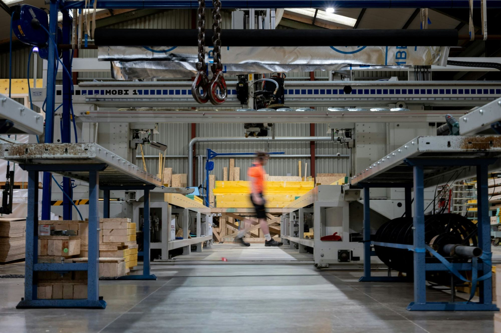
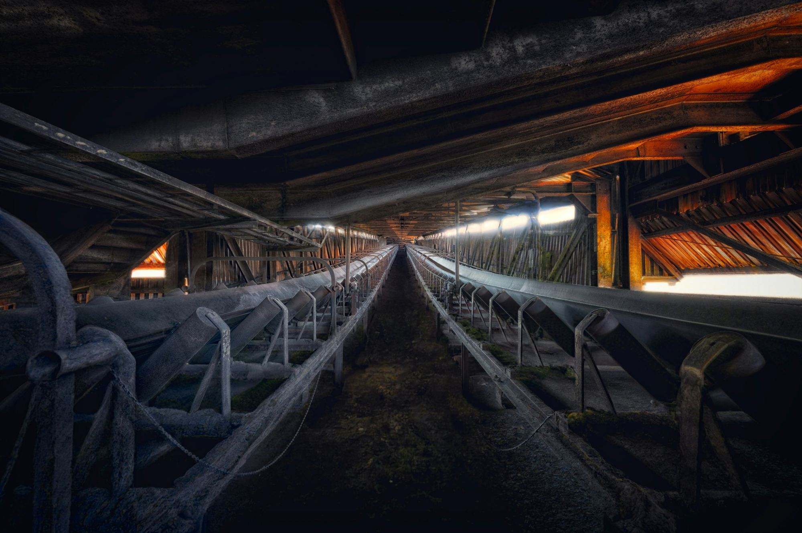

VRHA — Value · Reliability · Human · Agility
Operational excellence
for process industries
A corporate center of excellence, dedicated to your plant. Operational excellence consulting for the process industry.
The challenge
Same plant, same pressures. Not the same resources
The same pressures
Mid-sized process plants face the same pressures as large corporations:
But limited resources
- Corporate reliability and operational excellence teams far from the site
- Reliability and digital teams stretched too thin
Capable but overloaded site leadership: no bandwidth for a structured improvement program.
The VRHA offer
A senior partner, sized to your means
VRHA brings you 20+ years of operations and site leadership at Seveso-classified (high-hazard) chemical plants, in two flexible formats:
Short, targeted engagements
Diagnostics and improvement sprints with fixed scope and fixed price.
Fractional strategic leadership
The skills of an OpEx, reliability, digital or EHS director, without the hire.
Our commitment: concrete improvements that hold up on the shop floor, with measurable results. Digital is an optimization tool, never a prerequisite.

The work gets done with your team, on the floor, not in a report.
The VRHA method
Four questions, four pillars
Value
“Where are my money, time and resources going, and what should I invest in?”
Economic performance: diagnostic, fixed and variable cost reduction, capex prioritization, energy, KPIs.
Reliability
“How do I make all my operations reliable, not just my equipment?”
Reliability across every process (production, quality, supply chain, support functions): standardization, criticality, root causes, maintenance strategy, PM/PdM.
Human
“How do I engage my teams and retain their know-how?”
Team engagement: safety culture, frontline leadership, change management, knowledge capture.
Agility
“How do I decide and respond faster?”
Decision rhythm: routines, standard work, rapid problem solving, light digital as an option.
Every engagement starts from value (a quantified problem worth solving), is delivered through reliability and people, and leaves agility behind: a rhythm that makes results last.
Continuous improvement
Continuous improvement, driven every day
Daily management system
SQCDP boards close to the shop floor, short-interval reviews (daily, weekly).
Structured rapid problem solving
PDCA / A3, controlled escalation, actions tracked through to closure.
Standard work and leader routines
The management line owns the approach, not a project team.
Escalation and information flow
The right problem reaches the right person, at the right interval.
Why it lasts: results hold because frontline management drives the approach every day, not a project setup that eventually winds down.
Engagement formats
Three formats, one commitment to results
Findings and a prioritized 90-day roadmap across the four pillars.
The entry point- Reliability
- Cost & Energy
- Safety Culture
- Digital Quick Scan
- OpEx Director
- Reliability / Asset Manager
- Digital Manufacturing
- EHS / Process Safety
- Industrial sparring partner

Make all your operations reliable, not just your equipment.
Expertise
Three concrete entry points
Process safety and prevention culture
For Seveso-classified and similar high-hazard sites: an EHS coordinator is in place, but process safety and prevention culture lack depth.
Senior advisory, not basic training. Regulatory training remains the domain of accredited providers.
A site that masters process safety is ready to tackle reliability and cost.
People safety, a culture built on the shop floor
For industrial and logistics sites: rules are in place, yet accidents keep recurring and few issues get reported from the floor.
A method that makes people want to report. Every report is handled and followed up: teams see that speaking up makes things change.
Unsafe conditions, near misses, incidents
Severity and likelihood of each risk
Tackle the most severe risks first
Tracked actions, feedback to teams
A site that tackles its most severe risks first prevents the next accident.
Lean and operational performance, quantified gains on the floor
For process plants: losses that are known but rarely quantified, and improvement initiatives that run out of steam.
A task force, not a Black Belt project. A small shop-floor team attacks the biggest loss with simple tools. Reporting updates itself: time goes into analysis, not data entry.
Automated reporting: OEE, losses, energy
Pareto of losses valued in dollars and euros
A3, problem solving, 5S
Weekly check-in, action plan, monthly gains review
A plant that quantifies its losses knows where to win first.
How an engagement runs
Scan, align, deliver, transfer
Scan
Qualification video call (45 min), then a site visit and the VRHA Plant Diagnostic.
Align
A prioritized roadmap presented to leadership; you choose improvement sprints or fractional leadership.
Deliver
The work gets done with your team on the floor, not in a report.
Transfer
Standard work, routines and dashboards handed over; your team runs them on its own.
Every engagement ends with a client able to carry on without VRHA.
Getting started
The simplest first step
A qualification call by video.
A free site visit within our local area.
Then, if it's a mutual fit: the VRHA Plant Diagnostic, at a fixed price, with committed results.
Let's talk about your plant
Nicolas — VRHA Consulting · Based in France